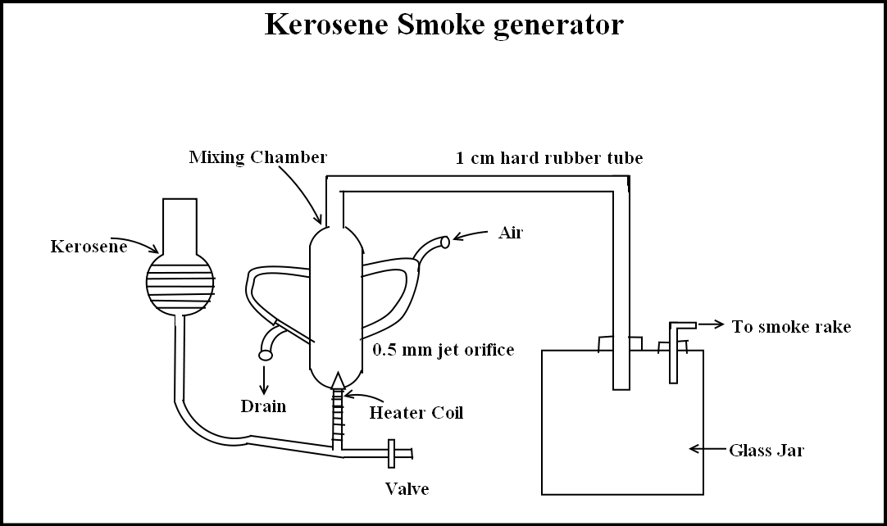

|
|
|
Study the smoke flow visualization wind tunnel | |
|
Apparatus
Kerosene Smoke Generator
The Kerosene smoke generator consists of a reservoir,an electrically heated glass tube to the top of which is attached a narrow nozzle,and a
mixing chamber.Kerosene is heated form vapor that emerges through the nozzle in the form of a jet inside the mixing chamber.
Two air jets impinging on the nozzle opening atomize the hot kerosene vapour forming white smoke.The smoke is taken out through the outlet provided at the top of mixing chamber.
 In the operation of Kerosene smoke generator the procedure below has to be followed:
Observations
Flow past a symmetric airfoil,cambered airfoil,circular cylinder and a triangular airfoil was visualized in test section. Symmetric airfoil NACA 66010 at zero angle of attack and attached flow.
As the angle of attack(AoA)of the airfoil is increased,the streamlines detach themselves one by one and
finally the entire flow gets separated from the upper surface of the airfoil at an angle of 24.8 degrees.
Since the airfoil is symmetric,we expect the airfoil to behave in the same way at negative AoA.The AoA at which the flow is separated from the lower
surface is -23.9 degrees.
Cambered Airfoil
Initially,when the airfoil is at zero AoA,the streamlines are seen.When the Angle of Attack of the airfoil is positive,
the flow separates at 41.2 degrees.
Typical separation angles are around 40 degrees. Circular Cylinder
The needle kink on cylinder is not in flow region.When the cylinder is rotated and the kink is brought into the flow field,
it affects the flow and causes the flow to separate earlier. |
|